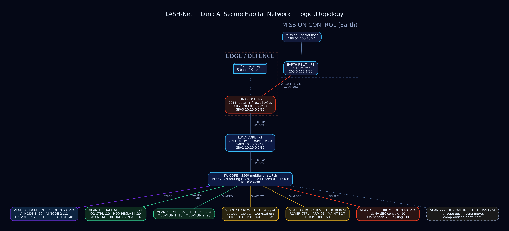

LASH-Net build guide
Everything needed to assemble the Luna AI Secure Habitat Network in Cisco Packet Tracer: the parts list, the addressing plan, every device configuration, and six attacks you can run to prove the defences work.

Built by Jaineil R. for NASA HUNCH Project ARES, with Angel C. and Farhan K. The configurations below are written for Packet Tracer 8.x and tested against its IOS command set.
What the network has to protect
A habitat network is not an office network. If the crew Wi-Fi goes down people are annoyed; if the oxygen controller is reachable from a laptop, people die. So LASH-Net is built around one rule: life support is never reachable from anywhere a person types. Everything else follows from that.

The quarantine VLAN on the right has no route anywhere. It is where Luna moves a port she does not trust.
Parts list
Thirty-two devices. Everything is a stock Packet Tracer model, so nothing here needs a module you have to buy or invent.
| Qty | Packet Tracer model | Used for |
|---|---|---|
| 3 | Router 2911 | LUNA-CORE, LUNA-EDGE, EARTH-RELAY |
| 1 | Switch 3560-24PS | SW-CORE — does the inter-VLAN routing, DHCP and all VLAN access lists |
| 6 | Switch 2960-24TT | SW-HAB, SW-CREW, SW-ROBO, SW-SEC, SW-MED, SW-DC |
| 1 | Access point WAP | crew tablets on VLAN 20 |
| 5 | Server-PT | AI-NODE-1, AI-NODE-2, DNS/DHCP/web, DB, BACKUP |
| 3 | Server-PT | IDS sensor, syslog, Luna security console |
| 4 | PC-PT | O2-CTRL, H2O-RECLAIM, PWR-MGMT, RAD-SENSOR (habitat) |
| 2 | PC-PT | MED-MON-1, MED-MON-2 |
| 3 | PC-PT / Laptop-PT | ROVER-CTRL, ARM-01, MAINT-BOT |
| 3 | Laptop-PT / Tablet-PT | crew devices |
| 1 | PC-PT | Mission Control host on Earth |
Addressing plan
Eight VLANs. The three that hold people's devices get addresses from DHCP; everything that keeps the crew alive is static, so a rogue device cannot simply ask the network for a valid address and be handed one.
| VLAN | Name | Subnet | Gateway | Addressing | Devices |
|---|---|---|---|---|---|
| 10 | HABITAT | 10.10.10.0/24 | 10.10.10.1 | static | O2-CTRL .10, H2O-RECLAIM .20, PWR-MGMT .30, RAD-SENSOR .40 |
| 20 | CREW | 10.10.20.0/24 | 10.10.20.1 | DHCP .100–.150 | laptops, tablets, workstations, WAP-CREW |
| 30 | ROBOTICS | 10.10.30.0/24 | 10.10.30.1 | DHCP .100–.150 | ROVER-CTRL, ARM-01, MAINT-BOT |
| 40 | SECURITY | 10.10.40.0/24 | 10.10.40.1 | static | LUNA-SEC console .10, IDS sensor .20, syslog .30 |
| 50 | DATACENTER | 10.10.50.0/24 | 10.10.50.1 | static | AI-NODE-1 .10, AI-NODE-2 .11, DNS/DHCP/web .20, DB .30, BACKUP .40 |
| 60 | MEDICAL | 10.10.60.0/24 | 10.10.60.1 | static | MED-MON-1 .10, MED-MON-2 .20 |
| 99 | MGMT | 10.10.99.0/24 | 10.10.99.1 | static | switch management addresses .21–.26 |
| 999 | QUARANTINE | 10.10.199.0/24 | 10.10.199.1 | none | where Luna parks a compromised port |
Links between routers
| Link | Subnet | Routing |
|---|---|---|
| LUNA-EDGE Gi0/1 ↔ EARTH-RELAY Gi0/0 | 203.0.113.0/30 | static route + default |
| LUNA-EDGE Gi0/0 ↔ LUNA-CORE Gi0/0 | 10.10.0.0/30 | OSPF area 0 |
| LUNA-CORE Gi0/1 ↔ SW-CORE Gi0/1 | 10.10.0.4/30 | OSPF area 0, routed port |
| EARTH-RELAY Gi0/1 ↔ Mission Control | 198.51.100.0/24 | static |
203.0.113.0/24 and 198.51.100.0/24 are the ranges reserved for documentation, which is why they are used for the Earth side rather than inventing public addresses.
Build order
Do it in this order. Routing before access lists, always — if you paste the access lists first you will spend an hour debugging a network that was never routing in the first place.
Place and cable
Drop the three routers, the 3560, the six 2960s and the access point. Cable router to router with copper cross-over, switch uplinks into SW-CORE Fa0/1–Fa0/6, then the end devices.
Addresses on the routers
Paste the EARTH-RELAY, LUNA-EDGE and LUNA-CORE configurations, minus the access-list sections. Ping across each link before moving on.
VLANs and trunks
Paste the SW-CORE configuration down to the end of the trunk section, then each access switch. Check with show vlan brief and show interfaces trunk.
Gateways and OSPF
Add the SVIs and the OSPF section on SW-CORE. Give it a minute, then show ip ospf neighbor on LUNA-CORE should list two neighbours.
Static addresses and DHCP
Set the static addresses on the habitat, medical, security and server devices. Switch the crew and robotics devices to DHCP and confirm they get .100 and up.
Prove it all works first
From a crew PC, ping one device in every VLAN. Everything should answer. This is the moment to fix routing, because once the access lists go on, a routing fault and a blocked packet look identical.
Access lists
Now paste the six access lists on SW-CORE and EARTH-IN on LUNA-EDGE. Re-run the same pings: the crew PC should now reach the servers and nothing else.
Port security
Paste the port-security lines on the access switches, then plug each device in once so the sticky MAC is learned. Save with write memory on every device.
Device configurations
Paste each block into that device's CLI tab in global configuration mode. Comment lines starting with ! are ignored by IOS, so you can paste them as they are.
enable configure terminal hostname EARTH-RELAY no ip domain-lookup enable secret Ares2026! service password-encryption banner motd #Mission Control relay. Authorised access only.# ! interface GigabitEthernet0/0 description Deep-space link to LUNA-EDGE ip address 203.0.113.1 255.255.255.252 no shutdown ! interface GigabitEthernet0/1 description Mission Control LAN ip address 198.51.100.1 255.255.255.0 no shutdown ! ! Everything on the Moon is reachable through LUNA-EDGE. ip route 10.0.0.0 255.0.0.0 203.0.113.2 ! line console 0 logging synchronous password cisco login exit end write memory
enable configure terminal hostname LUNA-EDGE no ip domain-lookup enable secret Ares2026! service password-encryption ! Brute-force defence: 3 bad logins in 60 s locks the line for 2 minutes. login block-for 120 attempts 3 within 60 login on-failure log login on-success log banner motd #LASH-Net edge. Luna AI monitors this device.# ! interface GigabitEthernet0/1 description Uplink to Earth via comms array ip address 203.0.113.2 255.255.255.252 ip access-group EARTH-IN in no shutdown ! interface GigabitEthernet0/0 description To LUNA-CORE ip address 10.10.0.1 255.255.255.252 no shutdown ! router ospf 1 router-id 2.2.2.2 network 10.10.0.0 0.0.0.3 area 0 default-information originate passive-interface GigabitEthernet0/1 exit ! ip route 0.0.0.0 0.0.0.0 203.0.113.1 ! ! ---- EARTH-IN: what Earth is allowed to send us ------------------- ! Order matters. Replies to sessions we started come first, then the ! one service we publish, then the hard denies, then deny-all. ip access-list extended EARTH-IN remark Return traffic for sessions the habitat opened permit tcp any 10.10.20.0 0.0.0.255 established permit tcp any 10.10.50.0 0.0.0.255 established permit icmp any 10.10.20.0 0.0.0.255 echo-reply permit icmp any 10.10.50.0 0.0.0.255 echo-reply remark Mission Control may read the public status page only permit tcp host 198.51.100.10 host 10.10.50.20 eq 443 permit tcp host 198.51.100.10 host 10.10.50.20 eq 80 remark Mission Control syslog feed permit udp host 198.51.100.10 host 10.10.40.30 eq 514 remark Earth must never touch life support, medical, robots or security deny ip any 10.10.10.0 0.0.0.255 log deny ip any 10.10.60.0 0.0.0.255 log deny ip any 10.10.30.0 0.0.0.255 log deny ip any 10.10.40.0 0.0.0.255 log deny ip any any log exit ! logging host 10.10.40.30 logging trap informational end write memory
enable configure terminal hostname LUNA-CORE no ip domain-lookup enable secret Ares2026! service password-encryption login block-for 120 attempts 3 within 60 ! interface GigabitEthernet0/0 description To LUNA-EDGE ip address 10.10.0.2 255.255.255.252 no shutdown ! interface GigabitEthernet0/1 description To SW-CORE routed port ip address 10.10.0.5 255.255.255.252 no shutdown ! router ospf 1 router-id 1.1.1.1 network 10.10.0.0 0.0.0.3 area 0 network 10.10.0.4 0.0.0.3 area 0 exit ! logging host 10.10.40.30 logging trap informational end write memory
enable configure terminal hostname SW-CORE no ip domain-lookup enable secret Ares2026! service password-encryption ip routing ! ! ---- VLANs ------------------------------------------------------- vlan 10 name HABITAT vlan 20 name CREW vlan 30 name ROBOTICS vlan 40 name SECURITY vlan 50 name DATACENTER vlan 60 name MEDICAL vlan 99 name MGMT vlan 999 name QUARANTINE exit ! ! ---- Routed uplink to LUNA-CORE ---------------------------------- interface GigabitEthernet0/1 description To LUNA-CORE no switchport ip address 10.10.0.6 255.255.255.252 no shutdown ! ! ---- Trunks down to the access switches --------------------------- interface FastEthernet0/1 description Trunk to SW-HAB switchport trunk encapsulation dot1q switchport mode trunk switchport trunk allowed vlan 10,99,999 interface FastEthernet0/2 description Trunk to SW-CREW switchport trunk encapsulation dot1q switchport mode trunk switchport trunk allowed vlan 20,99,999 interface FastEthernet0/3 description Trunk to SW-ROBO switchport trunk encapsulation dot1q switchport mode trunk switchport trunk allowed vlan 30,99,999 interface FastEthernet0/4 description Trunk to SW-SEC switchport trunk encapsulation dot1q switchport mode trunk switchport trunk allowed vlan 40,99,999 interface FastEthernet0/5 description Trunk to SW-DC switchport trunk encapsulation dot1q switchport mode trunk switchport trunk allowed vlan 50,99,999 interface FastEthernet0/6 description Trunk to SW-MED switchport trunk encapsulation dot1q switchport mode trunk switchport trunk allowed vlan 60,99,999 exit ! ! ---- Gateways for each VLAN -------------------------------------- interface Vlan10 description Habitat life support ip address 10.10.10.1 255.255.255.0 ip access-group HAB-IN in no shutdown interface Vlan20 description Crew devices ip address 10.10.20.1 255.255.255.0 ip access-group CREW-IN in no shutdown interface Vlan30 description Robotics ip address 10.10.30.1 255.255.255.0 ip access-group ROBO-IN in no shutdown interface Vlan40 description Security operations ip address 10.10.40.1 255.255.255.0 no shutdown interface Vlan50 description Data centre ip address 10.10.50.1 255.255.255.0 ip access-group DC-IN in no shutdown interface Vlan60 description Medical monitoring ip address 10.10.60.1 255.255.255.0 ip access-group MED-IN in no shutdown interface Vlan99 description Switch management ip address 10.10.99.1 255.255.255.0 no shutdown interface Vlan999 description Quarantine - Luna parks compromised ports here ip address 10.10.199.1 255.255.255.0 ip access-group QUARANTINE-IN in no shutdown exit ! ! ---- OSPF -------------------------------------------------------- router ospf 1 router-id 3.3.3.3 network 10.10.0.4 0.0.0.3 area 0 network 10.10.10.0 0.0.0.255 area 0 network 10.10.20.0 0.0.0.255 area 0 network 10.10.30.0 0.0.0.255 area 0 network 10.10.40.0 0.0.0.255 area 0 network 10.10.50.0 0.0.0.255 area 0 network 10.10.60.0 0.0.0.255 area 0 network 10.10.99.0 0.0.0.255 area 0 passive-interface default no passive-interface GigabitEthernet0/1 exit ! ! ---- DHCP: only crew and robots get dynamic addresses ------------ ! Life support, medical, servers and security are all static, so a ! rogue device cannot simply ask the network for a valid address. ip dhcp excluded-address 10.10.20.1 10.10.20.99 ip dhcp excluded-address 10.10.30.1 10.10.30.99 ip dhcp pool CREW-POOL network 10.10.20.0 255.255.255.0 default-router 10.10.20.1 dns-server 10.10.50.20 domain-name lash.local exit ip dhcp pool ROBO-POOL network 10.10.30.0 255.255.255.0 default-router 10.10.30.1 dns-server 10.10.50.20 exit ! ! ---- CREW-IN: crew can work, but never reach life support -------- ip access-list extended CREW-IN remark Name lookups and the habitat web services permit udp any host 10.10.50.20 eq 53 permit tcp any host 10.10.50.20 eq 53 permit tcp any host 10.10.50.20 eq 80 permit tcp any host 10.10.50.20 eq 443 remark Crew never talks to life support, medical, robots or security deny ip any 10.10.10.0 0.0.0.255 log deny ip any 10.10.60.0 0.0.0.255 log deny ip any 10.10.30.0 0.0.0.255 log deny ip any 10.10.40.0 0.0.0.255 log remark No remote logins into the AI servers from crew machines deny tcp any 10.10.50.0 0.0.0.255 eq 22 log deny tcp any 10.10.50.0 0.0.0.255 eq 23 log permit ip any any exit ! ! ---- HAB-IN: life support is allowed out to almost nothing ------- ip access-list extended HAB-IN permit udp any host 10.10.40.30 eq 514 permit ip any 10.10.50.0 0.0.0.255 permit ip any 10.10.40.0 0.0.0.255 deny ip any any log exit ! ! ---- ROBO-IN ----------------------------------------------------- ip access-list extended ROBO-IN permit udp any host 10.10.40.30 eq 514 permit ip any 10.10.50.0 0.0.0.255 deny ip any 10.10.10.0 0.0.0.255 log deny ip any 10.10.60.0 0.0.0.255 log deny ip any 10.10.20.0 0.0.0.255 log deny ip any any log exit ! ! ---- MED-IN: patient data goes to the database and nowhere else -- ip access-list extended MED-IN permit udp any host 10.10.40.30 eq 514 permit ip any host 10.10.50.30 permit ip any 10.10.40.0 0.0.0.255 deny ip any any log exit ! ! ---- DC-IN: servers answer requests, they do not start sessions -- ip access-list extended DC-IN permit udp any host 10.10.40.30 eq 514 permit ip any 10.10.40.0 0.0.0.255 deny ip any 10.10.10.0 0.0.0.255 log deny ip any 10.10.60.0 0.0.0.255 log permit ip any any exit ! ! ---- QUARANTINE-IN: a parked device may only shout for help ------ ip access-list extended QUARANTINE-IN permit udp any host 10.10.40.30 eq 514 deny ip any any log exit ! logging host 10.10.40.30 logging trap informational end write memory
enable configure terminal hostname SW-CREW no ip domain-lookup enable secret Ares2026! service password-encryption ! vlan 20 name CREW vlan 99 name MGMT vlan 999 name QUARANTINE exit ! interface range FastEthernet0/1-20 description Crew access ports switchport mode access switchport access vlan 20 switchport nonegotiate ! One known device per port. An unknown MAC shuts the port down - ! this is the Unauthorised Crew Login defence. switchport port-security switchport port-security maximum 1 switchport port-security mac-address sticky switchport port-security violation shutdown switchport port-security aging time 0 spanning-tree portfast spanning-tree bpduguard enable exit ! interface range FastEthernet0/21-24 description Unused - shut and parked in quarantine switchport mode access switchport access vlan 999 shutdown exit ! interface GigabitEthernet0/1 description Trunk to SW-CORE switchport mode trunk switchport trunk allowed vlan 20,99,999 exit ! interface Vlan99 ip address 10.10.99.22 255.255.255.0 no shutdown exit ip default-gateway 10.10.99.1 ! logging host 10.10.40.30 end write memory
enable configure terminal hostname SW-HAB no ip domain-lookup enable secret Ares2026! ! vlan 10 name HABITAT vlan 99 name MGMT vlan 999 name QUARANTINE exit ! interface range FastEthernet0/1-8 description Life support controllers - fixed hardware, locked to its MAC switchport mode access switchport access vlan 10 switchport port-security switchport port-security maximum 1 switchport port-security mac-address sticky switchport port-security violation shutdown spanning-tree portfast spanning-tree bpduguard enable exit ! interface range FastEthernet0/9-24 switchport mode access switchport access vlan 999 shutdown exit ! interface GigabitEthernet0/1 description Trunk to SW-CORE switchport mode trunk switchport trunk allowed vlan 10,99,999 exit ! interface Vlan99 ip address 10.10.99.21 255.255.255.0 no shutdown exit ip default-gateway 10.10.99.1 logging host 10.10.40.30 end write memory ! For the other four switches change only these three things: ! SW-ROBO hostname SW-ROBO vlan 30 Vlan99 10.10.99.23 trunk allowed 30,99,999 ! SW-SEC hostname SW-SEC vlan 40 Vlan99 10.10.99.24 trunk allowed 40,99,999 ! SW-DC hostname SW-DC vlan 50 Vlan99 10.10.99.25 trunk allowed 50,99,999 ! SW-MED hostname SW-MED vlan 60 Vlan99 10.10.99.26 trunk allowed 60,99,999
! Luna's four response tiers are ordinary IOS commands. In the live ! system Luna issues them herself; in Packet Tracer you type them, so ! a judge can watch the defence actually happen. ! --- TIER 1 LOW: log it and carry on ------------------------------ ! Nothing to type. The deny ... log lines in the ACLs already write ! to the syslog server at 10.10.40.30. Check what was caught: show access-lists show logging ! --- TIER 2 MEDIUM: isolate one device --------------------------- ! Move the offending port into the quarantine VLAN. It keeps its ! link light and can still reach syslog, so you can watch it, but it ! can no longer reach anything else. configure terminal interface FastEthernet0/5 switchport access vlan 999 description QUARANTINED by Luna end ! --- TIER 3 HIGH: block the attacker and shut the subnet off ----- configure terminal ip access-list extended EARTH-IN 1 deny ip host 198.51.100.66 any log end ! or drop a whole compromised VLAN at its gateway: configure terminal interface Vlan30 shutdown end ! --- TIER 4 CRITICAL: lock down, life support stays up ----------- ! Cut the link to Earth, keep the habitat's internal network running. configure terminal interface GigabitEthernet0/1 description LOCKDOWN - Luna cut the Earth uplink shutdown end ! Verify life support is still talking to the data centre: ! from O2-CTRL ping 10.10.50.10
Six attacks, and what stops them
Each one is a test you can run in front of a judge. Run it, watch it fail, then show the deny counter climbing in show access-lists. A defence you can demonstrate is worth more than a diagram of one.
Unauthorised crew loginTier 2 — isolate device
- What happens
- Someone plugs an unknown laptop into a crew port in the lounge.
- What stops it
- Port security. Each access port has learned exactly one MAC address and shuts down on anything else.
- How to run it
- Swap the PC on SW-CREW Fa0/3 for a new one and ping anything.
- What you should see
- Port goes err-disabled, link light turns red, nothing routes.
show port-security interface FastEthernet0/3 show port-security address
Malware-infected workstationTier 2 — isolate device
- What happens
- A crew laptop is infected and starts scanning for life-support controllers.
- What stops it
- CREW-IN denies any crew traffic to 10.10.10.0/24 and logs every attempt.
- How to run it
- From a crew PC: ping 10.10.10.10 and ping 10.10.10.30
- What you should see
- Request timed out. The deny counter on CREW-IN climbs with each try.
show access-lists CREW-IN show logging | include 10.10.10
Rover communication hijackingTier 3 — quarantine subnet
- What happens
- An attacker on the crew network tries to take over the rover controller.
- What stops it
- Crew and robotics are separate VLANs and CREW-IN denies crew to 10.10.30.0/24.
- How to run it
- From a crew PC: ping 10.10.30.100, then tracert 10.10.30.100
- What you should see
- Blocked at the first hop, the SW-CORE gateway. The rover never sees the packet.
show access-lists CREW-IN
Denial-of-service from EarthTier 3 — block attacker
- What happens
- A flood of traffic arrives down the deep-space link aimed at the AI servers.
- What stops it
- EARTH-IN only permits replies to sessions we started plus one published port, so unsolicited floods are dropped at the edge router.
- How to run it
- From the Mission Control host: ping 10.10.50.10 -n 20, then ping 10.10.10.10
- What you should see
- Every packet dropped at LUNA-EDGE. The habitat never feels it.
show access-lists EARTH-IN show ip interface GigabitEthernet0/1
Fake sensor data injectionTier 3 — quarantine subnet
- What happens
- A rogue device is planted in the habitat rack to feed false radiation readings.
- What stops it
- Habitat ports are locked to the real controller's MAC, unused ports are shut and parked in quarantine, and HAB-IN only lets habitat traffic reach the data centre.
- How to run it
- Plug a new PC into SW-HAB Fa0/9, or change the MAC on Fa0/4.
- What you should see
- Port shuts down before a single reading is accepted.
show port-security show interfaces status err-disabled
AI server breach attemptTier 4 — lock down network
- What happens
- Repeated remote-login attempts against AI-NODE-1 from inside the habitat.
- What stops it
- CREW-IN denies SSH and Telnet into the data centre, and login block-for locks the router line after three bad attempts in a minute.
- How to run it
- From a crew PC: telnet 10.10.50.10, then try the console login on LUNA-EDGE three times with a wrong password.
- What you should see
- Telnet refused by the ACL; the router line locks for 120 seconds and logs it.
show access-lists CREW-IN show login failures
Switch Packet Tracer into Simulation mode for the demonstration. You can watch the packet reach the SW-CORE gateway and get dropped there, which makes the segmentation visible rather than theoretical.
Marking checklist
What to have on screen when the project is judged.